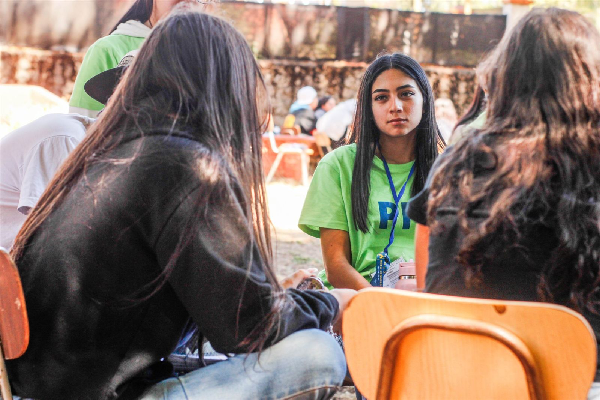

Segunda capacitación para consejeros
Actividades de los días miércoles y jueves de PFJ.
Desarrollar habilidades de enseñanza.

¡Bienvenido a la segunda capacitación en línea para consejeros! Está dividida en 5 módulos. Cada módulo tiene videos, las páginas del manual que debes estudiar y, al final, un breve repaso de alternativas. Invita a tu familia, a tus amigos o a otros consejeros de tu sesión a participar en las actividades prácticas.
Si haces esta capacitación en línea, además deberás asistir a la sesión recuperativa de tu sesión, donde repasaremos juntos todos los días.
Antes de empezar
Completa tus datos. Tu avance se guarda en este celular o computador, así que termina la capacitación en el mismo dispositivo. Si ya hiciste la primera capacitación aquí, tus datos aparecen solos. Los coordinadores de tu sesión reciben tu capacitación cuando presionas Finalizar y enviar, al final.
Registrado como .
Bienvenida y repaso
Introducción
Pensamiento espiritual
Codirector de sesión · 10 min
El Codirector de tu sesión comparte un pensamiento espiritual basado en el mensaje “El carácter de Cristo”, del presidente D. Todd Christofferson, Segundo Consejero de la Primera Presidencia.
de Cristo
“El carácter de Cristo”Grabado por el Codirector de tu sesión.
Repaso de los días lunes y martes
- Repasa el objetivo de la conferencia PFJ: fortalecer la fe en Jesucristo y en Su Evangelio restaurado, experimentar un mayor sentido de pertenencia y recibir poder para continuar teniendo experiencias espirituales en casa.
- Repasa las normas de Conducta en las actividades para jóvenes. Tú las repasarás con los jóvenes en el Reúnete con tu consejero.
- Si te quedaron dudas sobre el lunes o el martes, pregúntalas en el grupo de WhatsApp de tu sesión o llévalas a la sesión recuperativa.
Lee: Manual para el Personal, páginas 1–3.
El día miércoles
Compartir el Evangelio y servicio
Actividad Compartir el Evangelio
Evangelio
Programa y rotacionesCómo funciona la actividad, a partir de la tabla de las instrucciones.
- Las instrucciones de esta actividad no están en la versión actual del Manual para el Personal: están en un documento aparte.
- El material para que los participantes preparen su lección está impreso al final del Manual para el Participante (versión física, no digital).
- Tu tarea es ayudar a cada joven a prepararse para enseñar eficazmente.
Lee: Instrucciones de la actividad Compartir el Evangelio (PDF).
ACTIVIDAD: pídele a un familiar o amigo que prepare una lección breve con el material de la actividad y practica cómo lo ayudarías a prepararse, como lo harías con un joven de tu grupo.
Actividad de servicio
Coordinador Auxiliar de la actividad de servicio · 5 min
Los jóvenes de todas las sesiones prepararán kits escolares que serán donados a escuelas rurales. Los materiales los proporciona el Servicio de Bienestar del Área.
Noche de juegos
juegos
Estaciones, jueces y versos cantadosLa dinámica de estaciones, la rotación de los jueces y la final de versos cantados.
- Los consejeros explican los juegos a los jóvenes durante la Preparación de la noche de juegos de la compañía. Conocerlos bien de antemano te permite explicarlos con claridad y en poco tiempo, para que los jóvenes lleguen a cada estación sabiendo qué hacer y disfruten más.
- La meta es una competencia emocionante y cordial, no intensa ni divisiva. Tu ánimo y tu ejemplo marcan el tono de tu compañía.
ACTIVIDAD: elige uno de los juegos y explícaselo a un familiar o amigo como lo harías en la Preparación de la noche de juegos. Pregúntale qué no le quedó claro.
Taller 1: Primeros auxilios de salud mental
de salud mental
Taller 1Una visión general del Kit de Primeros Auxilios sobre Salud Mental, impartida por el Matrimonio Codirector de tu sesión.
Objetivo
Recordar a los consejeros que el Kit de Primeros Auxilios sobre la Salud Mental es una herramienta de apoyo. Su función no es diagnosticar ni resolver estas situaciones, sino brindar una primera contención sin indagar y comunicar oportunamente al Matrimonio Codirector.
Introducción
Durante el PFJ es posible que algunos jóvenes atraviesen momentos de mucho malestar emocional. La mayoría de las veces, el primer adulto con quien hablarán será su consejero. Por eso es importante saber cómo acompañarlos durante esos primeros minutos mientras buscamos el apoyo correspondiente.
Ataque de ansiedad o pánico
¿Qué podemos observar? No hace falta memorizar todos los síntomas, lo importante es reconocer señales como:
- Respiración agitada o sensación de ahogo.
- Llanto intenso o dificultad para hablar.
- Temblores.
- Sensación de mucho miedo.
- Mareos.
También pueden aparecer señales previas, como:
- Aislamiento.
- Falta de apetito.
- Dolor de cabeza o de estómago.
- Sensación de falta de aire.
¿Qué hacer?
- Llevar al joven a un lugar tranquilo y fresco.
- Permanecer con él.
- Hablar con voz calmada.
- Invitarlo a respirar lentamente: “Inhalamos y Exhalamos”.
- Ofrecer agua si es posible.
- Informar al Matrimonio Codirector.
Autolesiones
“A veces un joven puede expresar deseos de lastimarse o contar que lo ha hecho anteriormente”.
¿Qué hacer?
- Escuchar sin juzgar.
- Permanecer con el joven.
- Ofrecer alternativas para canalizar lo que siente: Escribir / Dibujar / Caminar / Conversar.
- Informar inmediatamente al Matrimonio Codirector.
¿Qué evitar?
- No retarlo.
- No minimizar.
- No hacer promesas de guardar el secreto.
Pensamientos suicidas
“Si un joven expresa ideas relacionadas con la muerte o dice que no quiere seguir viviendo, siempre debemos tomarlo con seriedad”.
¿Qué hacer?
- Mantener la calma.
- Llevarlo a un lugar tranquilo.
- Escucharlo.
- Hacer preguntas abiertas, por ejemplo: ¿Hace cuánto te sentís así? ¿Comenzó antes o durante PFJ? No profundizar.
- Reunir la información necesaria: Nombre, Compañía, Barrio, Estaca.
- Informar inmediatamente al Matrimonio Codirector.
Baile y taller 2
Baile en línea
Repasa los bailes que aprendiste en la primera capacitación y aprende uno nuevo. Elige uno con los botones para ver su paso a paso.
en línea
ACTIVIDAD: practica uno o dos bailes con alguien más hasta que puedas hacerlos sin mirar el video. Los volveremos a practicar juntos en la sesión recuperativa.
¿Cuáles practicaste?
Taller 2: Enseñar sobre Jesucristo independientemente de lo que se enseñe
Este taller se basa en la sección “Centrarse en Jesucristo” del manual Enseñar a la manera del Salvador. Mientras ves el video del élder Dieter F. Uchtdorf, haz una autoevaluación con la Lista de verificación del maestro, en la parte de centrarse en el Salvador.
Jesucristo
“Enseñar sobre Jesucristo independientemente de lo que se enseñe”Élder Dieter F. Uchtdorf.
Enseñar sobre Jesucristo independientemente de lo que se enseñe
- Hacer hincapié en el ejemplo de Jesucristo.
- Enseñar acerca de los títulos, las funciones y los atributos de Jesucristo.
- Buscar los símbolos que testifican de Jesucristo.
Ayudar a los alumnos a venir a Jesucristo
- Ayudar a los alumnos a reconocer el amor, el poder y la misericordia del Señor en sus vidas.
- Ayudar a los alumnos a fortalecer su relación con el Padre Celestial y Jesucristo.
- Ayudar a los alumnos a esforzarse intencionalmente por ser más como Jesucristo.
Esto no es solo para las clases: en PFJ puedes enseñar sobre Jesucristo en la noche de juegos, en la actividad de servicio o en una conversación con un joven.
Analiza
Responde estas preguntas en tu diario personal.
- Mira tu Lista de verificación. ¿Qué principio marcaste como una fortaleza y cuál quieres mejorar antes de PFJ? ¿Qué harás para mejorarlo?
- Elige una actividad de PFJ que no sea una clase (la noche de juegos, la actividad de servicio, los estandartes). ¿Cómo podrías ayudar a los jóvenes a ver a Jesucristo en ella?
- ¿Qué título, función o atributo de Jesucristo te gustaría que tu compañía conociera mejor durante la semana? ¿En qué momento y cómo lo enseñarías?
Para prepararte más: capacitación completa del élder Uchtdorf.
El día jueves
Hombres y Mujeres Jóvenes y espectáculo de variedades
Actividad de Hombres y Mujeres Jóvenes
de Mormón
“El Libro de Mormón, otro testamento de Jesucristo”Conoce la actividad para que sea más significativa para todos.
La actividad tiene tres rotaciones:
- Devocional matutino y práctica del popurrí.
- Introducción del Coordinador Auxiliar de la Actividad de Hombres y Mujeres Jóvenes.
- Actividad en grupo de El Libro de Mormón.
ACTIVIDAD: realiza la actividad en grupo de El Libro de Mormón con tu familia o amigos, tal como la harías con los jóvenes. Después piensa cómo guiarás a los participantes para que la vivan como algo espiritual.
Espectáculo de variedades
variedades
Promoción del espectáculo de variedadesVideo de promoción.
Repasa las pautas para que puedas animar a los jóvenes de tu grupo a participar y ayudarlos a preparar sus presentaciones.
Lee: Manual para el Participante, páginas 78 y 104.
Reverencia y programa musical
Análisis sobre la reverencia y el testimonio
Lee Doctrina y Convenios 88:67–68 y medita en la doctrina y el propósito de la reverencia. En esta actividad, los consejeros:
- Comienzan con un himno y leen Doctrina y Convenios 88:67–68.
- Analizan la doctrina y el propósito de la reverencia.
- Enseñan a los jóvenes que la reverencia no es solo estar callado, sino que es una condición del ser.
- Ayudan a los jóvenes a entender cómo la reverencia los ayudará a recibir revelación.
- Ayudan a los jóvenes a entender lo que es y lo que no es un testimonio.
- Invitan a los jóvenes a pensar en lo que han aprendido durante el día y cómo pueden seguir preparándose para las actividades vespertinas y para la reunión de testimonios.
Lee: Manual para el Personal, página 60; Manual para el Participante, páginas 80–81.
Programa musical
musical
Promoción del programa musicalVideo de promoción.
Responsabilidades de los consejeros en el programa musical:
- Encargados del programa musical y de su preparación espiritual: un Coordinador Auxiliar y 2 o 3 consejeros ayudantes.
- Promoción del programa musical: antes, durante y después del registro de llegada.
- Audiciones de lectores y solos.
- Ensayos, horarios, lugar y ejecución del programa musical.
- El jueves los jóvenes pasan gran parte del día ensayando, por eso el análisis sobre la reverencia y el testimonio de ese día lo dirigen los consejeros asignados al programa musical. Así los jóvenes no tienen que volver a su compañía solo para ese análisis.
Lee: Manual para el Personal, páginas 17 y 95–97 (estúdialas con especial atención; “Preparación” está en la página 95).
Devocional vespertino y reunión de testimonios
Devocional vespertino
testimonios
Apertura de testimoniosPor ahora está disponible el video de PFJ 2026, del élder y la hermana Renlund. El de PFJ 2027, del élder y la hermana Caussé, se agregará cuando esté disponible.
Después del devocional vespertino hay un tiempo para que los jóvenes escriban su testimonio en su diario personal.
Lee: Manual para el Personal, página 195; Manual para el Participante, página 87.
Invitación a guardar la reverencia y reunión de testimonios
Repasa tus responsabilidades en la reunión de testimonios y qué es un testimonio, con las sugerencias del Manual para el Participante. Así podrás ayudar al joven que siente que “no tiene testimonio”.
Lee: Manual para el Personal, página 17; Manual para el Participante, página 82.
ACTIVIDAD: escribe tu propio testimonio en tu diario, como lo harán los jóvenes esa noche.
Taller 3 y mensaje final
Taller 3: Amar a quienes enseña
Este taller se basa en la sección “Amar a quienes enseña” del manual Enseñar a la manera del Salvador. Mientras ves el video del élder Dieter F. Uchtdorf, haz una autoevaluación con la Lista de verificación del maestro, en la parte de amar a quienes enseñas.
enseña
“Amar a quienes enseña”Élder Dieter F. Uchtdorf.
- El Salvador veía el potencial divino de todas las personas a las que enseñaba.
- El Salvador nos conoce y comprende nuestras circunstancias, necesidades y fortalezas.
- El Salvador oraba por aquellos a quienes enseñaba.
- El Salvador se aseguraba de que todos se sintieran respetados y valorados.
- El Salvador expresaba Su amor por aquellos a quienes enseñaba.
Analiza
Responde estas preguntas en tu diario personal.
- Mira tu Lista de verificación. ¿En qué parte de amar a quienes enseñas estás más fuerte y en cuál quieres mejorar?
- El Salvador oraba por aquellos a quienes enseñaba. ¿Cómo puedes empezar a orar por los jóvenes de tu compañía desde antes de conocerlos y, durante la semana, por cada uno por su nombre?
- Piensa en un joven que llega sin conocer a nadie y se queda al margen. ¿Qué harías el primer día para que se sienta respetado, valorado y parte de la compañía?
Para prepararte más: capacitación completa del élder Uchtdorf.
Reflexionar. Analizar. Anotar.
“Reflexiona sobre las cosas que has recibido” (Doctrina y Convenios 30:3). Medita en estas preguntas y anota tus impresiones en tu cuaderno personal:
- ¿En qué momentos del miércoles y del jueves tendrás más oportunidades de enseñar sobre Jesucristo?
- ¿Qué joven de tu futura compañía podría necesitar más tu amor y tu atención durante esos días?
- ¿Cómo te estás preparando espiritualmente para la reunión de testimonios?
Mensaje final: Allegaos a mí
a mí
Mensaje finalEl Director de sesión comparte un mensaje basado en el discurso “Sigue al profeta, lo que él dice manda el Señor”, del élder Michael John U. Teh, de los Setenta.
Lee: “Sigue al profeta, lo que él dice manda el Señor”, élder Michael John U. Teh.
Terminar la capacitación
Tu avance se ha ido guardando en este dispositivo, pero todavía no se ha enviado. Cuando termines todo, presiona Finalizar y enviar y los coordinadores de tu sesión recibirán tu capacitación completa.
Sesión recuperativa
Si hiciste esta capacitación en línea en lugar de la presencial, debes asistir a la sesión recuperativa de tu sesión. Allí:
- Repasaremos juntos todas las actividades de los días miércoles y jueves.
- Resolveremos tus dudas.
- Practicaremos el baile en línea y uno de los juegos de la noche de juegos.
- Haremos la actividad en grupo de El Libro de Mormón como la harán los jóvenes.
Tu capacitación se considera completa cuando terminaste los 5 módulos de esta página y asististe a la sesión recuperativa.
Recursos adicionales
Manual para el Personal PFJ 2027
Manual del Participante PFJ 2027
Guía de Aplicación del Manual para el Personal al Área
Horario PFJ 2027 – Regocíjate en Cristo
Instrucciones de la actividad Compartir el Evangelio
Música y videos del baile en línea
Enseñar a la manera del Salvador
Lista de verificación del maestro
Kit de Primeros Auxilios de Salud Mental